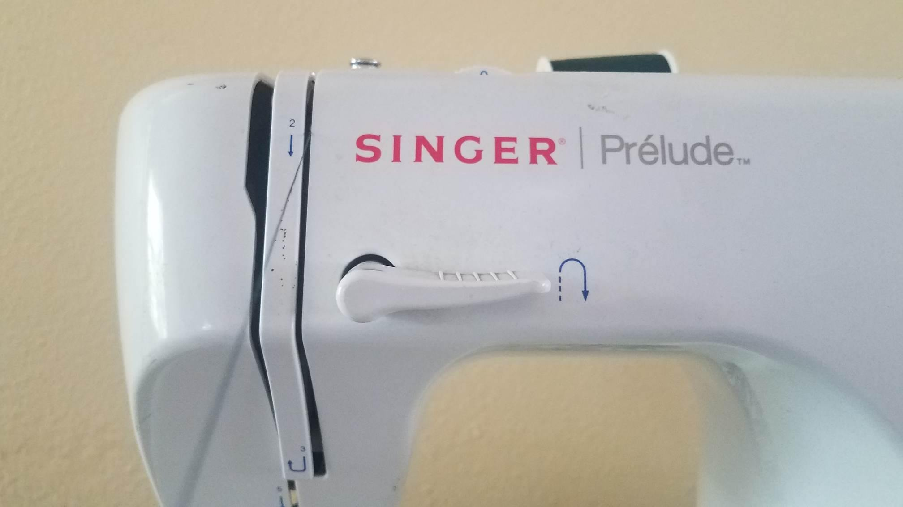

Step 1
 Place the thread spool on the spool pin
Place the thread spool on the spool pin
Step 2
Wrap the thread around the rectangular guide
Step 3
 Pull the thread down
Step 4
Pull the thread around the end of the plastic and up
Step 5
 Wrap the thread around the takeup lever
Wrap the thread around the takeup lever
Step 6
Put the thread through the front hole of the needle
Step 7
The top thread is set and you're ready to sew